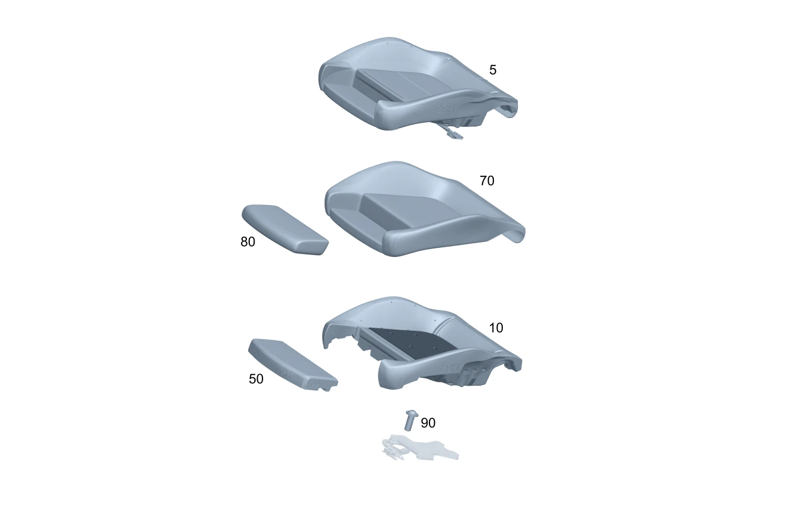

| № | Артикул | Название | Кол. | Примечание | Ограничение |
|---|---|---|---|---|---|
| 5 | A 174 910 43 04 | Ремк-т подушки сид.вод. | 1 | Подушка переднего сиденья справа Рулевое управление: Влево | 7U2+275+100A+U10 |
| 5 | A 174 910 37 04 | Ремк-т подушки сид.вод. | 1 | Подушка переднего сиденья справа Рулевое управление: Влево | 7U4+275+650A+U10 |
| 10 | A 174 910 81 02 | Подкладка подушки сиденья (AUFLAGE FAHRERKISSEN) | 1 | Мягкая подкладка подушки переднего сиденья слева | 7U2+275+300A |
| 10 | A 174 910 83 02 | Подкладка подушки сиденья (AUFLAGE FAHRERKISSEN) | 1 | Мягкая подкладка подушки переднего сиденья слева | 7U2+275+(100A/200A/220A) |
| 10 | A 174 910 83 02 | Подкладка подушки сиденья (AUFLAGE FAHRERKISSEN) | 1 | Мягкая подкладка подушки переднего сиденья слева | 7U2+275+120A |
| 10 | A 174 910 83 02 | Подкладка подушки сиденья (AUFLAGE FAHRERKISSEN) | 1 | Мягкая подкладка подушки переднего сиденья слева | 7U2+275+(100A/120A) |
| 10 | A 174 910 87 02 | Подкладка подушки сиденья (AUFLAGE FAHRERKISSEN) | 1 | Мягкая подкладка подушки переднего сиденья слева | 7U4+275 |
| 10 | A 174 910 87 02 | Подкладка подушки сиденья (AUFLAGE FAHRERKISSEN) | 1 | Мягкая подкладка подушки переднего сиденья слева | 7U4+275 |
| 50 | A 174 910 04 00 | Подкладка подушки сиденья (AUFLAGE FAHRERKISSEN) | 1 | Опора Регулировка длины подушки сиденья Переднее сиденье слева | 275 |
| 50 | A 174 910 04 00 | Подкладка подушки сиденья (AUFLAGE FAHRERKISSEN) | 1 | Опора Регулировка длины подушки сиденья Переднее сиденье справа | 275 |
| 70 | A 174 910 03 03 | Обивка подушки сиденья | 1 | Обивка подушки переднего сиденья слева | 7U2+100A+275 |
| 70 | A 174 910 37 05 | Обивка подушки сиденья | 1 | Обивка подушки переднего сиденья слева Рулевое управление: Влево | 7U2+(120A+121A)+275+(807/808/29X)+700 |
| 70 | A 174 910 37 05 | Обивка подушки сиденья | 1 | Обивка подушки переднего сиденья слева Рулевое управление: Влево | 7U2+(120A+121A)+275+700 |
| 70 | A 174 910 97 03 | Обивка подушки сиденья | 1 | Обивка подушки переднего сиденья слева | 7U2+(120A+128A)+275+807+700 |
| 70 | A 174 910 97 03 | Обивка подушки сиденья | 1 | Обивка подушки переднего сиденья слева | 7U2+(120A+128A)+275+700 |
| 70 | A 174 910 97 03 | Обивка подушки сиденья | 1 | Обивка подушки переднего сиденья слева | 7U2+120A+(124A/128A)+275+(807+057/808/29X)+700 |
| 70 | A 174 910 09 03 | Обивка подушки сиденья | 1 | Обивка подушки переднего сиденья слева | 7U4+650A+275 |
| 70 | A 174 910 81 03 | Обивка подушки сиденья (BEZUG FAHRERKISSEN) | 1 | Обивка подушки переднего сиденья слева | 7U4+650A+275+(807/808/29X) |
| 70 | A 174 910 81 03 | Обивка подушки сиденья (BEZUG FAHRERKISSEN) | 1 | Обивка подушки переднего сиденья слева | 7U4+650A+275+(807/808/29X) |
| 70 | A 174 910 81 03 | Обивка подушки сиденья (BEZUG FAHRERKISSEN) | 1 | Обивка подушки переднего сиденья слева | 7U4+650A+275+700 |
| 70 | A 174 910 04 03 | Обивка подушки сиденья | 1 | Обивка подушки переднего сиденья справа | 7U2+100A+275 |
| 70 | A 174 910 04 03 | Обивка подушки сиденья | 1 | Обивка подушки переднего сиденья справа | 7U2+100A+275 |
| 70 | A 174 910 38 05 | Обивка подушки сиденья | 1 | Обивка подушки переднего сиденья справа Рулевое управление: Влево | 7U2+(120A+121A)+275+(807/808/29X) |
| 70 | A 174 910 38 05 | Обивка подушки сиденья | 1 | Обивка подушки переднего сиденья справа Рулевое управление: Влево | 7U2+(120A+121A)+275 |
| 70 | A 174 910 98 03 | Обивка подушки сиденья | 1 | Обивка подушки переднего сиденья справа | 7U2+(120A+128A)+275+807 |
| 70 | A 174 910 98 03 | Обивка подушки сиденья | 1 | Обивка подушки переднего сиденья справа | 7U2+(120A+128A)+275 |
| 70 | A 174 910 98 03 | Обивка подушки сиденья | 1 | Обивка подушки переднего сиденья справа | 7U2+120A+(124A/128A)+275+(807+057/808/29X)+700 |
| 70 | A 174 910 10 03 | Обивка подушки сиденья | 1 | Обивка подушки переднего сиденья справа | 7U4+650A+275 |
| 70 | A 174 910 10 03 | Обивка подушки сиденья | 1 | Обивка подушки переднего сиденья справа | 7U4+650A+275 |
| 70 | A 174 910 82 03 | Обивка подушки сиденья (BEZUG FAHRERKISSEN) | 1 | Обивка подушки переднего сиденья справа | 7U4+650A+275+(807/808/29X) |
| 70 | A 174 910 82 03 | Обивка подушки сиденья (BEZUG FAHRERKISSEN) | 1 | Обивка подушки переднего сиденья справа | 7U4+650A+275+(807/808/29X) |
| 70 | A 174 910 82 03 | Обивка подушки сиденья (BEZUG FAHRERKISSEN) | 1 | Обивка подушки переднего сиденья справа | 7U4+650A+275+700 |
| 80 | A 174 910 52 00 | Обивка подушки сиденья | 1 | Обивка Регулировка длины подушки сиденья Переднее сиденье слева | 7U2+(100A/300A)+275 |
| 80 | A 174 910 00 04 | Обивка подушки сиденья | 1 | Обивка Регулировка длины подушки сиденья Переднее сиденье слева | 7U2+120A+275+(807/808/29X)+700 |
| 80 | A 174 910 00 04 | Обивка подушки сиденья | 1 | Обивка Регулировка длины подушки сиденья Переднее сиденье слева | 7U2+120A+275+700 |
| 80 | A 174 910 60 01 | Обивка подушки сиденья | 1 | Обивка Регулировка длины подушки сиденья Переднее сиденье слева | 7U4+(650A/680A)+275 |
| 80 | A 174 910 70 03 | Обивка подушки сиденья | 1 | Обивка Регулировка длины подушки сиденья Переднее сиденье слева | 7U4+(650A/680A)+275+(807/808/29X) |
| 80 | A 174 910 70 03 | Обивка подушки сиденья | 1 | Обивка Регулировка длины подушки сиденья Переднее сиденье слева | 7U4+(650A/680A)+275+(807/808/29X) |
| 80 | A 174 910 70 03 | Обивка подушки сиденья | 1 | Обивка Регулировка длины подушки сиденья Переднее сиденье слева | 7U4+(650A/680A)+275 |
| 80 | A 174 910 52 00 | Обивка подушки сиденья | 1 | Обивка Регулировка длины подушки сиденья Переднее сиденье справа | 7U2+(100A/300A)+275 |
| 80 | A 174 910 52 00 | Обивка подушки сиденья | 1 | Обивка Регулировка длины подушки сиденья Переднее сиденье справа | 7U2+(100A/300A)+275 |
| 80 | A 174 910 00 04 | Обивка подушки сиденья | 1 | Обивка Регулировка длины подушки сиденья Переднее сиденье справа | 7U2+120A+275+(807/808/29X)+700 |
| 80 | A 174 910 00 04 | Обивка подушки сиденья | 1 | Обивка Регулировка длины подушки сиденья Переднее сиденье справа | 7U2+120A+275+700 |
| 80 | A 174 910 60 01 | Обивка подушки сиденья | 1 | Обивка Регулировка длины подушки сиденья Переднее сиденье справа | 7U4+(650A/680A)+275 |
| 80 | A 174 910 70 03 | Обивка подушки сиденья | 1 | Обивка Регулировка длины подушки сиденья Переднее сиденье справа | 7U4+(650A/680A)+275+(807/808/29X) |
| 80 | A 174 910 70 03 | Обивка подушки сиденья | 1 | Обивка Регулировка длины подушки сиденья Переднее сиденье справа | 7U4+(650A/680A)+275+(807/808/29X) |
| 80 | A 174 910 70 03 | Обивка подушки сиденья | 1 | Обивка Регулировка длины подушки сиденья Переднее сиденье справа | 7U4+(650A/680A)+275 |
| 90 | N 000000 002349 | Винт с 6-гр. глвк (SECHSRUNDSCHRAUBE) | 1 | Болт кронштейна \- блок управления системой распознавания занятости сиденья \- система определения веса; 6X16 Рулевое управление: Влево | U10 |
| 90 | N 000000 002349 | Винт с 6-гр. глвк (SECHSRUNDSCHRAUBE) | 1 | Болт кронштейна \- блок управления системой распознавания занятости сиденья \- система определения веса; 6X16 Рулевое управление: Влево | U10 |
| 120 | A 174 910 57 02 | Рама спинки сиденья | 1 | Каркас спинки переднего сиденья слева | 7U2+275 |
| 120 | A 174 910 58 02 | Рама спинки сиденья | 1 | Каркас спинки переднего сиденья слева | 7U4+275 |
| 120 | A 174 910 57 02 | Рама спинки сиденья | 1 | Каркас спинки переднего сиденья справа | 7U2+275 |
| 120 | A 174 910 58 02 | Рама спинки сиденья | 1 | Каркас спинки переднего сиденья справа | 7U4+275 |
| 125 | A 174 910 56 02 | - Сегмент рамы (RAHMENSEGMENT) | 1 | Верхний усиливающий элемент каркаса спинки переднего левого сиденья | 7U2 |
| 125 | A 174 910 29 05 | - Сегмент рамы | 1 | Верхний усиливающий элемент каркаса спинки переднего левого сиденья | 7U2 |
| 125 | A 174 910 56 02 | - Сегмент рамы (RAHMENSEGMENT) | 1 | Верхний усиливающий элемент каркаса спинки переднего правого сиденья | 7U2 |
| 125 | A 174 910 29 05 | - Сегмент рамы | 1 | Верхний усиливающий элемент каркаса спинки переднего правого сиденья | 7U2 |
| 130 | A 463 984 00 61 | - Крепежная скоба (BEFESTIGUNGSKLAMMER) | 34 | Скоба обивки переднего левого сиденья | 7U2 |
| 130 | A 463 984 00 61 | - Крепежная скоба (BEFESTIGUNGSKLAMMER) | 40 | Скоба обивки переднего левого сиденья | 7U2+275 |
| 130 | A 463 984 00 61 | - Крепежная скоба (BEFESTIGUNGSKLAMMER) | 38 | Скоба обивки переднего левого сиденья | 7U4 |
| 130 | A 463 984 00 61 | - Крепежная скоба (BEFESTIGUNGSKLAMMER) | 44 | Скоба обивки переднего левого сиденья | 7U4+275 |
| 130 | A 463 984 00 61 | - Крепежная скоба (BEFESTIGUNGSKLAMMER) | 34 | Скоба обивки переднего правого сиденья | 7U2 |
| 130 | A 463 984 00 61 | - Крепежная скоба (BEFESTIGUNGSKLAMMER) | 40 | Скоба обивки переднего правого сиденья | 7U2+275 |
| 130 | A 463 984 00 61 | - Крепежная скоба (BEFESTIGUNGSKLAMMER) | 38 | Скоба обивки переднего правого сиденья | 7U4 |
| 130 | A 463 984 00 61 | - Крепежная скоба (BEFESTIGUNGSKLAMMER) | 44 | Скоба обивки переднего правого сиденья | 7U4+275 |
| 135 | A 174 975 01 00 | - Направляющая подголовника (KOPFSTUETZENFUEHRUNG) | 2 | Направляющая подголовника \- переднее сиденье слева | |
| 135 | A 174 975 01 00 | - Направляющая подголовника (KOPFSTUETZENFUEHRUNG) | 2 | Направляющая подголовника \- переднее сиденье справа | |
| 138 | A 174 975 02 00 | - Направляющая подголовника | 2 | Розетка Подголовник переднего сиденья слева | |
| 138 | A 174 975 02 00 | - Направляющая подголовника | 2 | Розетка Подголовник переднего сиденья справа | |
| 140 | A 174 990 03 00 | - Винт Torx с полукруглой (LINSENKOPFSCHRAUBE M. ISR) | 1 | Болт Основание подголовника Переднее сиденье слева; 5X102,5 | 7U4 |
| 140 | A 174 990 03 00 | - Винт Torx с полукруглой (LINSENKOPFSCHRAUBE M. ISR) | 1 | Болт Основание подголовника Переднее сиденье справа; 5X102,5 | 7U4 |
| 150 | A 174 918 02 00 | - Нажимная кнопка | 1 | Кнопка продольной регулировки положения подголовника \- переднее сиденье слева | 7U4 |
| 150 | A 174 918 02 00 | - Нажимная кнопка | 1 | Кнопка продольной регулировки положения подголовника \- переднее сиденье справа | 7U4 |
| 160 | N 000000 000528 | - Шуруп (BLECHSCHRAUBE) | 2 | Болт каркаса спинки сиденья \- переднее сиденье слева; 4.8X16 | |
| 160 | N 000000 000528 | - Шуруп (BLECHSCHRAUBE) | 2 | Болт каркаса спинки сиденья \- переднее сиденье слева; 4.8X16 | |
| 160 | N 000000 000528 | - Шуруп (BLECHSCHRAUBE) | 2 | Болт каркаса спинки сиденья \- переднее сиденье справа; 4.8X16 | |
| 160 | N 000000 000528 | - Шуруп (BLECHSCHRAUBE) | 2 | Болт каркаса спинки сиденья \- переднее сиденье справа; 4.8X16 | |
| 220 | A 174 910 77 00 | Накладка спинки сиденья (AUFLAGE FAHRERLEHNE) | 1 | Мягкая подкладка спинки переднего сиденья слева Рулевое управление: Влево | 7U2+325 |
| 220 | A 174 910 31 03 | Накладка спинки сиденья (AUFLAGE FAHRERLEHNE) | 1 | Мягкая подкладка спинки переднего сиденья слева Рулевое управление: Влево | 7U4+325 |
| 220 | A 174 910 10 00 | Накладка спинки сиденья (AUFLAGE FAHRERLEHNE) | 1 | Мягкая подкладка спинки переднего сиденья справа | 7U2 |
| 220 | A 174 910 30 03 | Накладка спинки сиденья (AUFLAGE FAHRERLEHNE) | 1 | Мягкая подкладка спинки переднего сиденья справа | 7U4 |
| 260 | A 174 910 41 00 | Обивка спинки сиденья | 1 | Обивка спинки переднего сиденья слева Рулевое управление: Влево | 7U2+100A+325 |
| 260 | A 174 910 39 05 | Обивка спинки сиденья | 1 | Обивка спинки переднего сиденья слева Рулевое управление: Влево | 7U2+(120A+121A)+325+(807/808/29X)+700 |
| 260 | A 174 910 39 05 | Обивка спинки сиденья | 1 | Обивка спинки переднего сиденья слева Рулевое управление: Влево | 7U2+(120A+121A)+325+700 |
| 260 | A 174 910 99 03 | Обивка спинки сиденья | 1 | Обивка спинки переднего сиденья слева | 7U2+(120A+128A)+325+807+700 |
| 260 | A 174 910 99 03 | Обивка спинки сиденья | 1 | Обивка спинки переднего сиденья слева | 7U2+(120A+128A)+325+700 |
| 260 | A 174 910 99 03 | Обивка спинки сиденья | 1 | Обивка спинки переднего сиденья слева | 7U2+120A+(124A/128A)+325+(807+057/808/29X)+700 |
| 260 | A 174 910 43 03 | Обивка спинки сиденья | 1 | Обивка спинки переднего сиденья слева Рулевое управление: Влево | 7U4+650A+325 |
| 260 | A 174 910 73 03 | Обивка спинки сиденья (BEZUG FAHRERLEHNE) | 1 | Обивка спинки переднего сиденья слева Рулевое управление: Влево | 7U4+650A+325+(807/808/29X) |
| 260 | A 174 910 73 03 | Обивка спинки сиденья (BEZUG FAHRERLEHNE) | 1 | Обивка спинки переднего сиденья слева Рулевое управление: Влево | 7U4+650A+325+(807/808/29X) |
| 260 | A 174 910 73 03 | Обивка спинки сиденья (BEZUG FAHRERLEHNE) | 1 | Обивка спинки переднего сиденья слева Рулевое управление: Влево | 7U4+650A+325 |
| 260 | A 174 910 26 00 | Обивка спинки сиденья | 1 | Обивка спинки переднего сиденья справа | 7U2+100A |
| 260 | A 174 910 40 03 | Обивка спинки сиденья | 1 | Обивка спинки переднего сиденья справа | 7U2+(120A+128A)+807+700 |
| 260 | A 174 910 40 03 | Обивка спинки сиденья | 1 | Обивка спинки переднего сиденья справа | 7U2+(120A+128A)+700 |
| 260 | A 174 910 40 03 | Обивка спинки сиденья | 1 | Обивка спинки переднего сиденья справа | 7U2+120A+(124A/128A)+(807+057/808/29X)+700 |
| 260 | A 174 910 36 05 | Обивка спинки сиденья | 1 | Обивка спинки переднего сиденья справа Рулевое управление: Влево | 7U2+(120A+121A)+(807/808/29X)+700 |
| 260 | A 174 910 36 05 | Обивка спинки сиденья | 1 | Обивка спинки переднего сиденья справа Рулевое управление: Влево | 7U2+(120A+121A)+700 |
| 260 | A 174 910 42 03 | Обивка спинки сиденья | 1 | Обивка спинки переднего сиденья справа | 7U4+650A |
| 260 | A 174 910 72 03 | Обивка спинки сиденья | 1 | Обивка спинки переднего сиденья справа | 7U4+650A+(807/808/29X) |
| 260 | A 174 910 72 03 | Обивка спинки сиденья | 1 | Обивка спинки переднего сиденья справа | 7U4+650A+(807/808/29X) |
| 260 | A 174 910 72 03 | Обивка спинки сиденья | 1 | Обивка спинки переднего сиденья справа | 7U4+650A |
| 270 | A 174 913 00 00 | Накладка спинки сиденья | 1 | Накладка Облицовка спинки сиденья Переднее сиденье слева | |
| 270 | A 174 913 08 00 | Накладка спинки сиденья | 1 | Накладка Облицовка спинки сиденья Переднее сиденье слева | 807/808/29X |
| 270 | A 174 913 08 00 | Накладка спинки сиденья | 1 | Накладка Облицовка спинки сиденья Переднее сиденье слева | |
| 270 | A 174 913 00 00 | Накладка спинки сиденья | 1 | Накладка Облицовка спинки сиденья Переднее сиденье справа | |
| 270 | A 174 913 08 00 | Накладка спинки сиденья | 1 | Накладка Облицовка спинки сиденья Переднее сиденье справа | 807/808/29X |
| 270 | A 174 913 08 00 | Накладка спинки сиденья | 1 | Накладка Облицовка спинки сиденья Переднее сиденье справа | |
| 330 | A 248 860 36 00 | Боковая НПБ | 1 | Боковая подушка безопасности спереди слева | 55B+700 |
| 330 | A 248 860 37 00 | Боковая НПБ | 1 | Боковая подушка безопасности спереди справа | 55B+700 |
| 340 | N 000000 008272 | Гайка (MUTTER) | 1 | Гайка боковой подушки безопасности спереди слева; M6 | |
| 340 | N 000000 008272 | Гайка (MUTTER) | 1 | Гайка боковой подушки безопасности спереди слева; M6 | |
| 340 | N 000000 008272 | Гайка (MUTTER) | 1 | Гайка боковой подушки безопасности спереди справа; M6 | |
| 340 | N 000000 008272 | Гайка (MUTTER) | 1 | Гайка боковой подушки безопасности спереди справа; M6 | |
| 350 | A 178 860 15 00 | Центральная НПБ | 1 | Центральная подушка безопасности переднего сиденья Рулевое управление: Влево | 325+55B+700 |
| 360 | N 000000 008272 | Гайка (MUTTER) | 1 | Гайка центральной подушки безопасности переднего сиденья; M6 Рулевое управление: Влево | 325 |
| 360 | N 000000 008272 | Гайка (MUTTER) | 1 | Гайка центральной подушки безопасности переднего сиденья; M6 Рулевое управление: Влево | 325 |
| 420 | A 174 970 98 00 | Подголовник | 1 | Подголовник переднего сиденья слева | 7U2+(100A/300A)+(835/830) |
| 420 | A 174 970 89 00 | Подголовник | 1 | Подголовник переднего сиденья слева | 7U2+120A+(121A/128A)+(807/808/29X)+830+700 |
| 420 | A 174 970 89 00 | Подголовник | 1 | Подголовник переднего сиденья слева | 7U2+120A+(121A/128A)+830+700 |
| 420 | A 174 970 89 00 | Подголовник | 1 | Подголовник переднего сиденья слева | 7U2+120A+124A+(807+057/808/29X)+830+700 |
| 420 | A 174 970 24 00 | Подголовник | 1 | Подголовник переднего сиденья слева | 7U4+(150A/650A/680A) |
| 420 | A 174 970 98 00 | Подголовник | 1 | Подголовник переднего сиденья справа | 7U2+(100A/300A)+(835/830) |
| 420 | A 174 970 89 00 | Подголовник | 1 | Подголовник переднего сиденья справа | 7U2+120A+(121A/128A)+(807/808/29X)+830+700 |
| 420 | A 174 970 89 00 | Подголовник | 1 | Подголовник переднего сиденья справа | 7U2+120A+(121A/128A)+830+700 |
| 420 | A 174 970 89 00 | Подголовник | 1 | Подголовник переднего сиденья справа | 7U2+120A+124A+(807+057/808/29X)+830+700 |
| 420 | A 174 970 24 00 | Подголовник | 1 | Подголовник переднего сиденья справа | 7U4+(150A/650A/680A) |
| 450 | N 000000 009343 | Винт с 6-гр. глвк (SECHSRUNDSCHRAUBE) | 4 | Болт механизма регулировки положения сиденья \- каркас спинки сиденья \- переднее сиденье слева; M10X14 | |
| 450 | N 000000 009343 | Винт с 6-гр. глвк (SECHSRUNDSCHRAUBE) | 4 | Болт механизма регулировки положения сиденья \- каркас спинки сиденья \- переднее сиденье слева; M10X14 | |
| 450 | N 000000 009343 | Винт с 6-гр. глвк (SECHSRUNDSCHRAUBE) | 4 | Болт механизма регулировки положения сиденья \- каркас спинки сиденья \- переднее сиденье справа; M10X14 | |
| 450 | N 000000 009343 | Винт с 6-гр. глвк (SECHSRUNDSCHRAUBE) | 4 | Болт механизма регулировки положения сиденья \- каркас спинки сиденья \- переднее сиденье справа; M10X14 |
Позиций: 130 · подписано на схемах: 130 · колесо — плавный зум в курсор, перетаскивание — пан, двойной клик — зум, клик по артикулу — скопировать · наведите на строку или цифру на схеме — подсветка связки, клик — закрепить.